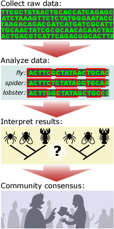

Evaluating an idea in light of the evidence should be simple, right? Either the results match the expectations generated by the idea (thus, supporting it) or they don't (thus, refuting it). Sometimes the process is relatively simple (e.g., drilling into a coral atoll either reveals a thick layer of coral or a thin veneer), but often it is not. The real world is messy and complex, and often, interpreting the evidence relating to an idea is not so clear-cut. To complicate things further, we often have to weigh multiple lines of evidence that are all relevant to the validity of a particular idea.
Tests typically generate what scientists think of as raw data — unaltered observations, descriptions, or measurements — but those must be analyzed and interpreted. Data become evidence only when they have been interpreted in a way that reflects on the accuracy or inaccuracy of a scientific idea. For example, an investigation of the evolutionary relationships among crustaceans, insects, millipedes, spiders, and their relatives might tell us the genetic sequence of a particular gene for each organism. This is raw data, but what does it mean? A long series of the As, Ts, Gs, and Cs that make up genetic sequences don't, by themselves, tell us whether insects are more closely related to crustaceans or to spiders. Instead, those data must be analyzed through statistical calculations, tabulations, and/or visual representations. In this case, a biologist might begin to analyze the genetic data by aligning the different sequences, highlighting similarities and differences, and performing calculations to compare the different sequences. Only then can she interpret the results and figure out whether or not they support the hypothesis that insects are more closely related to crustaceans than to spiders.
Furthermore, the same data may be interpreted in different ways. So another scientist could analyze the same genetic data in a new way and come to a different conclusion about the relationships between insects, crustaceans, and spiders. Ultimately, the scientific community will come to a consensus about how a set of data should be interpreted, but this process may take some time and usually involves additional lines of evidence.
CALCULATING CONFIDENCE
Interpreting test results often means dealing with uncertainty and error. "Now, hold on," you might be thinking, "I thought that science was supposed to build knowledge and decrease uncertainty and error." And that's true; however, when scientists draw a conclusion or make a calculation, they frequently try to give a statistical indication of how confident they are in the result. In everyday language, uncertainty and error mean that the answer is unclear or that a mistake has been made. However, when scientists talk about uncertainty and error, they are usually indicating their level of confidence in a number. So reporting a temperature to be 98.6℉ (37℃) with an uncertainty of plus or minus 0.4℉ actually means that we are highly confident that the true temperature falls between 98.2 and 99.0℉.